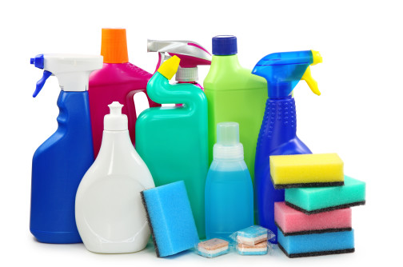

Solution for: The Development of Plastics
Answer Table
| 1. photographic film | 8. FALSE |
| 2. Bakelite | 9. NOT GIVEN |
| 3. switches | 10. FALSE |
| 4. Britain/UK | 11. TRUE |
| 5. fireproof | 12. FALSE |
| 6. clear and glass-like | 13. TRUE |
| 7. rigid |
Exam Review


The Development of Plastics
When rubber was first commercially produced in Europe during the nineteenth century, it rapidly became a very important commodity, particularly in the fields of transportation and electricity. However, during the twentieth century a number of new synthetic materials, called plastics, superseded natural rubber in all but a few applications.
Rubber is a polymer—a compound containing large molecules that are formed by the bonding of many smaller, simpler units, repeated over and over again. The same bonding principle—polymerization—underlies the creation of a huge range of plastics by the chemical industry.
|
Keywords in Questions |
Similar words in Passage |
|
Q8: The chemical structure of plastic is very different from that of rubber. |
Rubber is a polymer—a compound containing large molecules that are formed by the bonding of many smaller, simpler units, repeated over and over again. The same bonding principle—polymerization—underlies the creation of a huge range of plastics by the chemical industry. |
|
From the above text, it could be inferred that rubber and plastic are both formed by the bonding of many units. Furthermore, both of them are polymer. Therefore, the chemical structure of plastic is similar to that of rubber => The answer is FALSE. |
|
The first plastic was developed as a result of a competition in the USA.
In the 1860s, $10,000 was offered to anybody who could replace ivory—supplies of which were declining—with something equally good as a material for making billiard balls. The prize was won by John Wesley Hyatt with a material called celluloid.
|
Keywords in Questions |
Similar words in Passage |
|
Q9: John Wesley was a famous chemist. |
In the 1860s, $10,000 was offered to anybody who could replace ivory—supplies of which were declining—with something equally good as a material for making billiard balls. The prize was won by John Wesley Hyatt with a material called celluloid. |
|
From the above text, it could be inferred that John Wesley won a $10,000 prize for inventing celluloid to replace ivory. From the following sentences in the paragraph, we can imply that celluloid became a useful material in several products. However, no further information is given about the fame achieved by John Wesley for his celluloid. Therefore, even though John Wesley won a huge cash prize for his invention, we cannot directly assume that he was a famous chemist => The answer is NOT GIVEN. |
|
Celluloid was made by dissolving cellulose, a carbohydrate derived from plants, in a solution of camphor dissolved in ethanol. This new material rapidly found uses in the manufacture of products such as knife handles, detachable collars and cuffs, spectacle frames and photographic film. Without celluloid, the film industry could never have got off the ground at the end of the 19th century.
|
Keywords in Questions |
Similar words in Passage |
|
Q1: Common use of Celluloid, which was invented in the 1860s in the US. |
The first plastic was developed as a result of a competition in the USA. In the 1860s, $10,000 was offered to anybody who could replace ivory—supplies of which were declining—with something equally good as a material for making billiard balls This new material rapidly found uses in the manufacture of products such as knife handles, detachable collars and cuffs, spectacle frames and photographic film. Without celluloid, the film industry could never have got off the ground at the end of the 19th century. |
|
Since the first 7 questions require filling missing information into the table, we can take advantage of the available data, such as Name of plastic, Date of invention, Original Region, Property and Common Use to quickly extract the necessary information from the passages. Thus, SKIM AND SCAN is undoubtedly useful for these type of questions. From the question, we can assume that the answer must be a Noun. + From the first and second sentence, we can see the keywords “in the USA” and “in the 1860s”, these information pieces suit the characteristics of Celluloid => The answer must be in this paragraph. + Luckily, the remaining keywords are practically the same: “common use” and “found uses”. However, Celluloid provides more uses than we can fill in the table. Consequently, the last sentence clarifies that Celluloid plays a vital role in the film industry (get off the ground = successfully launch). Since the answer must be NO MORE THAN THREE WORDS, photographic film is the appropriate answer of this question. |
|
Celluloid can be repeatedly softened and reshaped by heat, and is known as a thermoplastic.
In 1907, Leo Baekeland, a Belgian chemist working in the USA, invented a different kind of plastic, by causing phenol and formaldehyde to react together. Baekeland called the material Bakelite, and it was the first of the thermosets—plastics that can be cast and moulded while hot, but cannot be softened by heat and reshaped once they have set. Bakelite was a good insulator, and was resistant to water, acids and moderate heat. With these properties it was soon being used in the manufacture of switches, household items such as knife handles, and electrical components for cars.
|
Keywords in Questions |
Similar words in Passage |
|
Q2 + Q3: Name and Common Use of the plastic which can be cast and moulded but cannot be softened by heat. This plastic was invented in 1907 in the US. |
In 1907, Leo Baekeland, a Belgian chemist working in the USA, invented a different kind of plastic, by causing phenol and formaldehyde to react together. Baekeland called the material Bakelite, and it was the first of the thermosets—plastics that can be cast and moulded while hot, but cannot be softened by heat and reshaped once they have set. With these properties it was soon being used in the manufacture of switches, household items such as knife handles, and electrical components for cars. |
|
From the questions Q2 and Q3, we can assume that the answer must be Nouns. + At the beginning of the paragraph, the keywords “in 1907” and “in the USA” suit the given characteristics of the unknown plastic => The answer must be in this paragraph. + Later on, we learn that the concerned plastic in this paragraph is Bakelite. Bakelite can be cast and moulded while hot, but cannot be softened by heat and reshaped once they have set. Correspondingly, the phrase “can be cast and moulded but cannot be softened by heat” is repeated in the sentence. Hence, Bakelite is the answer of Q2. + The last sentence informs us about the uses of Bakelite. In short, Bakelite can be used to manufacture switches, household items and electrical components for cars. Since “household items and car parts” are already filled in the table, switches must be the remaining answer for Q3. |
|
|
Keywords in Questions |
Similar words in Passage |
|
Q10: Celluloid and Bakelite react to heat in the same way. |
Celluloid can be repeatedly softened and reshaped by heat, and is known as a thermoplastic. Baekeland called the material Bakelite, and it was the first of the thermosets—plastics that can be cast and moulded while hot, but cannot be softened by heat and reshaped once they have set. |
|
There is a striking contrast in the keywords provided in both sentences. While Celluloid can be softened and reshaped by heat, Bakelite cannot be softened by heat and reshaped once they have set. Therefore, Celluloid and Bakelite react to heat differently => The answer is FALSE. |
|
Soon chemists began looking for other small molecules that could be strung together to make polymers.
In the 1930s British chemists discovered that the gas ethylene would polymerize under heat and pressure to form a thermoplastic they called polythene.
|
Keywords in Questions |
Similar words in Passage |
|
Q4: The original region of Polythene, which was invented in 1930. |
In the 1930s British chemists discovered that the gas ethylene would polymerize under heat and pressure to form a thermoplastic they called polythene. |
|
From the question, we can assume that the answer must be a Noun. + “Polythene” appears in the second sentence of the paragraph. Furthermore, the phrase “in the 1930s” also confirms us that the answer must be in this paragraph. + It is clear that British chemists discovered polythene in the 1930s. Thus, we only need to transform British to Britain or UK to fill in the table as the answer must be a Noun. No need to waste time for further skimming and scanning since the answer is quite straightforward. |
|
Polypropylene followed in the 1950s. Both were used to make bottles, pipes and plastic bags.
A small change in the starting material—replacing a hydrogen atom in ethylene with a chlorine atom—produced PVC (polyvinyl chloride), a hard, fireproof plastic suitable for drains and gutters. And by adding certain chemicals, a soft form of PVC could be produced, suitable as a substitute for rubber in items such as waterproof clothing.
|
Keywords in Questions |
Similar words in Passage |
|
Q5: the property of Rigid PVC |
A small change in the starting material—replacing a hydrogen atom in ethylene with a chlorine atom—produced PVC (polyvinyl chloride), a hard, fireproof plastic suitable for drains and gutters. |
|
From the question, the answer can be a Noun, an Adjective or even a Phrase. +The available information for Rigid PVC is nothing except for the name of the plastic => We can only rely on Rigid PVC to spot the potential answer area. +The keyword “PVC” is very easy to spot. Thus, the answer must be somewhere around here. +This question may baffle us with 2 types of PVC: hard PVC and soft PVC. Consequently, the keyword “Rigid” already clarifies that Q5 only concerns hard PVC (Rigid = Hard), hence, soft form of PVC is eliminated. +Luckily, Rigid PVC is introduced through a single sentence. Therefore, we can learn that apart from being hard, Rigid PVC is notable for being fireproof => fireproof is the answer for Q5. |
|
A closely related plastic was Teflon, or PTFE (polytetrafluoroethylene). This had a very low coefficient of friction, making it ideal for bearings, rollers, and non-stick frying pans.
Polystyrene, developed during the 1930s in Germany, was a clear, glass-like material, used in food containers, domestic appliances and toys. Expanded polystyrene—a white, rigid foam—was widely used in packaging and insulation.
|
Keywords in Questions |
Similar words in Passage |
|
Q6: the property of Polystyrene, which was invented in the 1930s in Germany. Polystyrene is used in food container. |
Polystyrene, developed during the 1930s in Germany, was a clear, glass-like material, used in food containers, domestic appliances and toys. |
|
From the question, the answer can be a Noun, an Adjective or even a Phrase. +The keywords “Polystyrene”, “during the 1930s”, “Germany” consecutively appear => The answer must be somewhere around here. +Understanding the sentence, the Polystyrene’s property mentioned in this sentence is clear and glass-like => Clear and glass-like is the answer for Q6. |
|
Polyurethanes, also developed in Germany, found uses as adhesives, coatings, and—in the form of rigid foams—as insulation materials. They are all produced from chemicals derived from crude oil, which contains exactly the same elements—carbon and hydrogen—as many plastics.
|
Keywords in Questions |
Similar words in Passage |
|
Q7: the property of Polyurethanes, which was invented in Germany. Polyurethanes is used in adhesives, coatings and insulation. |
Polyurethanes, also developed in Germany, found uses as adhesives, coatings, and—in the form of rigid foams—as insulation materials. |
|
From the question, the answer can be a Noun, an Adjective or even a Phrase. +The keywords “Polyurethanes”, “Germany” successively appear => The answer must be somewhere around here. +The uses of Polyurethanes in adhesives, coatings and insulation is fully repeated in the phrase “adhesives, coatings, and—in the form of rigid foams—as insulation materials” + Apart from other characteristics, rigid foams are the remaining ones => They must be the properties of Polyurethanes + As foams has been filled in the table, the answer for Q7 must be rigid. |
|
The first of the man-made fibres, nylon, was also created in the 1930s. Its inventor was a chemist called Wallace Carothers, who worked for the Du Pont company in the USA. He found that under the right conditions, two chemicals— hexamethylenediamine and adipic acid—would form a polymer that could be pumped out through holes and then stretched to form long glossy threads that could be woven like silk. Its first use was to make parachutes for the US armed forces in World War II. In the post-war years nylon completely replaced silk in the manufacture of stockings. Subsequently many other synthetic fibres joined nylon, including Orion, Acrilan and Terylene. Today most garments are made of a blend of natural fibres, such as cotton and wool, and man-made fibres that make fabrics easier to look after.
The great strength of plastic is its indestructibility. However, this quality is also something of a drawback: beaches all over the world, even on the remotest islands, are littered with plastic bottles that nothing can destroy.
Nor is it very easy to recycle plastics, as different types of plastic are often used in the same items and call for different treatments.
|
Keywords in Questions |
Similar words in Passage |
|
Q11: The mix of different varieties of plastic can make the recycling more difficult. |
Nor is it very easy to recycle plastics, as different types of plastic are often used in the same items and call for different treatments. |
|
From this sentence, we can imply that the same items contain a mix of different varieties of plastic which call for different treatments. Thus, it is really hard to recycle plastics => The answer is TRUE. Note: The keywords are quite tricky for those who are not familiar with the Nor structure. When “Nor” goes with “very easy”, the actual meaning is the contrast of “very easy”, such as difficult, hard or impossible. In addition, the terms “the mix of different varieties” and “different types” are interchangeable in this context. |
|
Plastics can be made biodegradable by incorporating into their structure a material such as starch, which is attacked by bacteria and causes the plastic to fall apart.
|
Keywords in Questions |
Similar words in Passage |
|
Q12: Adding starch into plastic can make plastic more durable. |
Plastics can be made biodegradable by incorporating into their structure a material such as starch, which is attacked by bacteria and causes the plastic to fall apart. |
|
From the sentence, it can be implied that adding starch into plastic can cause the plastic to fall apart, thus make it biodegradable. Therefore, the sentence carries a completely different meaning compared to that of the question. In fact, while “durable” means long-lasting, “biodegradable” means that the plastic will fall apart, which makes it become harmless to the environment => The answer is FALSE. Note: the words “adding into” and “incorporating into” is interchangeable in this context. |
|
Other materials can be incorporated that gradually decay in sunlight—although bottles made of such materials have to be stored in the dark, to ensure that they do not disintegrate before they have been used.
|
Keywords in Questions |
Similar words in Passage |
|
Q13: Some plastic containers have to be preserved in special conditions. |
Other materials can be incorporated that gradually decay in sunlight—although bottles made of such materials have to be stored in the dark, to ensure that they do not disintegrate before they have been used. |
|
From the sentence, we can imply that some plastic containers mentioned in the question, in fact, are the bottles made of materials which can be incorporated that gradually decay in sunlight. Hence, such bottles have to be stored in the dark to ensure that they do not disintegrate before they have been used. Therefore, we can conclude that some plastic containers have to be preserved in special conditions => The answer is TRUE. |
|
-------------------------------------------
Great thanks to volunteer Ngoc Tran has contributed these explanations and question markings.
If you want to make a better world like this, please contact us.
Questions 1-7
Complete the table below
Choose NO MORE THAN THREE WORDS from the passages for each answer
Write your answer in boxes 1-7 on your answer sheet.
|
Name of plastic |
Date of invention |
Original region |
Property |
Common use |
|
Celluloid |
1860s |
US |
1 |
|
|
2 |
1907 |
US |
Can be cast and moulded but cannot be softened by heat |
3 |
|
household items and car parts |
||||
|
Polythene |
1930 |
4 |
Bottles |
|
|
Rigid PVC |
5 |
|||
|
Polystyrene |
1930s |
Germany |
6 |
Food container |
|
Polyurethanes |
Germany |
7 foams |
Adhesives, coatings and insulation |
Questions 8-13
Do the following statements agree with the information in Reading Passage?
In boxes 8-13 on your answer sheet write
TRUE if the statement agrees with the information
FALSE if the statement contradicts the information
NOT GIVEN if there is no information about the statement
8 The chemical structure of plastic is very different from that of rubber.
Answer: FALSE Locate
9 John Wesley was a famous chemist.
Answer: NOT GIVEN
10 Celluloid and Bakelite react to heat in the same way.
Answer: FALSE Locate
11 The mix of different varieties of plastic can make the recycling more difficult.
Answer: TRUE Locate
12 Adding starch into plastic can make plastic more durable.
Answer: FALSE Locate
13 Some plastic containers have to be preserved in special conditions.
Answer: TRUE Locate
Other Tests
-
Total questions: 14
- 11- Matching Headings
- 3- Matching Information

-
Total questions: 6
- 6- YES-NO-NOT GIVEN
-
Total questions: 14
- 9- TRUE-FALSE-NOT GIVEN
- 5- Matching Information
-
Total questions: 7
- 7- TRUE-FALSE-NOT GIVEN

-
Total questions: 13
- 4- Multiple Choice
- 9- Matching Information

-
Total questions: 6
- 6- TRUE-FALSE-NOT GIVEN